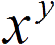
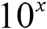

函数描述：
MAX
描述：计算所选参数数值的和
规则：Number1：1-255个带求和的数值。参数中的逻辑值大数据库德哈卡电话卡和点卡很多客户看。逻辑值和文本有效。
常用函数：


- SUM
- IF
- s
☰ 标准
0
- %
- √


- CE
- C
- Back
- ÷
- 7
- 8
- 9
- ×
- 4
- 5
- 6
- -
- 1
- 2
- 3
- +
- ±
- 0
- .
- =
☰ 科学
0
- (
- )

- n!
- Exp
- 
- sin
- cos
- tan
- 
- log
- sinh
- cosh
- tanh
- π
- CE
- C
- Back
- ÷
- √
- 7
- 8
- 9
- ×
- %
- 4
- 5
- 6
- -
- 1
- 2
- 3
- +
- ↑
- ±
- 0
- .
- =
计算器
☰ Programmer
0
HEX 0
DEC 0
OCT 0
BIN 0
- A
- B
- C
- D
- E
- F
- ↑
- CE
- C
- Back
- ÷
- And
- 7
- 8
- 9
- ×
- Or
- 4
- 5
- 6
- -
- Not
- 1
- 2
- 3
- +
- (
- )
- 0
- .
- =
历史记录内存

- aX2 + bX = C

- aX2 + bX = C
- aX2 + bX = C
- aX2 + bX = C
保存